|
|
Customizing the application
If you have administrator permissions, you can customize your user interface to suit the needs of your organization.
For information on customizing asset types by defining new fields, see Defining fields on asset types.
To access the Settings page, click the Administration icon on the left side of the main screen, then select Settings:
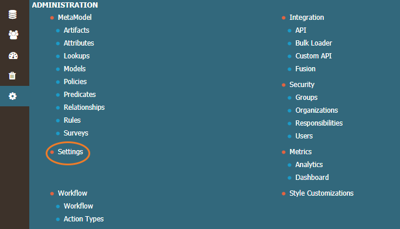
The Settings page opens:
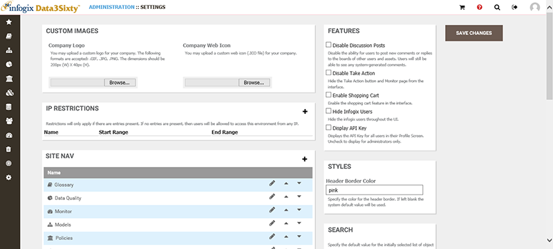
Tip: For many of the settings on this page, you will need to click the Save Changes button on the right of the screen for your changes to take effect.
Custom Images
- Company Logo
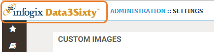
You can substitute your company logo in place of the Infogix logo that appears in the top left corner of the screen by clicking Choose file in the Company Logo section of the Custom Images panel.
- Company web icon
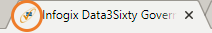
You can substitute your company icon in place of the Infogix icon (favicon) that is displayed on web browser tabs by clicking Choose file in the Company Web Icon section of the Custom Images panel.
Features
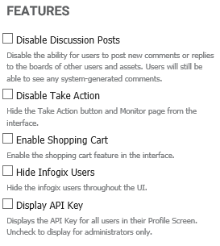
The Features settings allow you to customize the buttons that are available from the toolbar at the top of the application:
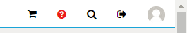
IP Restrictions
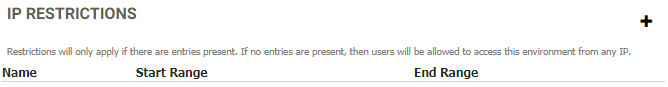
You can restrict access to certain IP addresses or a range of addresses by clicking the Add icon.
If you do not add any IP addresses then there will be no restriction and users will be able to access the environment from any IP address.
Styles
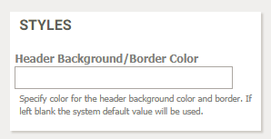
The color that you specify in the Header Background/Border Color field only controls the thin strip of color that separates the toolbar from the rest of the application.
Site Nav
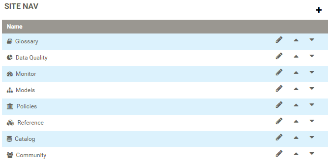
Customize the icons that appear on the left side of the screen. You can re-order or rename the icons, select an alternative icon, or restrict permissions.
Home page customization
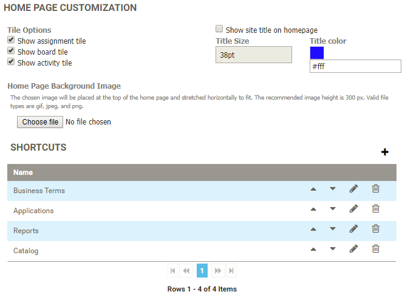
Modify the appearance of the default welcome screen, including adding any shortcut links to other websites:
- The Tile Options allow you to select whether to display the Your Assignments, Board and Activity panels on the home page.
- Show site title on homepage allows you to display a title on the home page in a color of your choosing.
- The Home Page Background Image updates the image that is displayed on the home page.
- Shortcuts controls the icons that are displayed on the bottom of the home page. You can specify the order of the icons and which icons to use. You can add icons that link to areas within the application, or you can link to an external location e.g. a SharePoint site.
Search
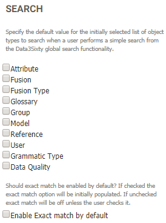
Select a default value for the initially selected list of object types to search. Choose whether to enable exact match by default.
These options control the default search on the home page:
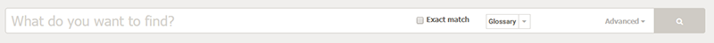
These options do not control the search in the upper right corner of the home page.
Default route
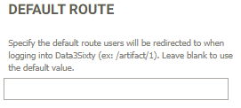
Specify the default route that users will be redirected to when they log in to the application.
Note: There are some settings that can only be updated from the database by Infogix Engineering. For example, by default, users with an Infogix email address are not displayed as users in the user interface. If you want to show Infogix users, please contact Infogix Support.